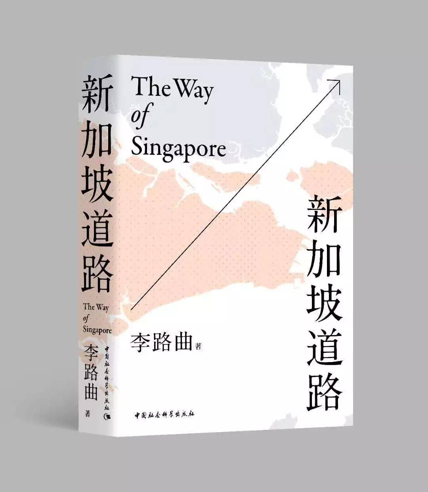
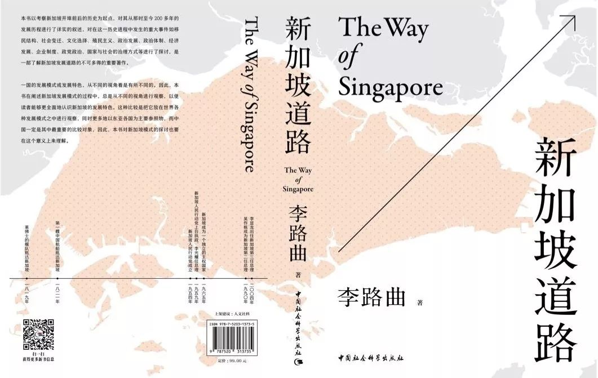

收录于合集

李路曲 著
2018年8月出版
ISBN：978-7-5203-1373-5
定价：99元
中国社会科学出版社出版
**从9月14日09：00至9月16日20：00，
**
在本文下方留言 点赞数前三位的读者将有机会获赠
《新加坡道路》一本，数量有限，择优送出！
本文摘自《新加坡道路》一书的序言，中国社会科学出版社荣誉出版。
若您读后有收获，请关注和分享 “政文观止Poliview” 和“ 寰宇小书 ”公众号，我们将为您提供海内外比较政治学研究的第一手信息。

壹
序
新加坡研究三十年
李路曲
自20世纪70—80年代开始崛起的新加坡及“亚洲四小龙”受到世界的关注，国内外学术界把其称为“新加坡模式”“四小龙模式”及“东亚模式”等。“东亚模式”是指东亚各国在特定的发展阶段即20世纪后半叶以来的一种共同的发展模式，是以日本为雁头，“四小龙”“五小虎”、中国和东亚其他国家相继发展起来的一种“雁阵模式”，现在是以中国为主要代表的一种发展模式。这些国家或地区地处东亚，在这一发展阶段以威权主义与市场体制的特定结构推动着现代化进程。它们均具有东方文化尤其是儒家文化的历史传统，并不断实现着现代化的转化。当然，在一些国家或地区，“东亚模式”的这些特色已经消失。这使我在20世纪80年代末决定加入研究这一模式的行列，当然，与当时的潮流——研究经济发展不同，我虽然也关注新加坡的经济发展，但主要是研究政治发展。此后有近十年的时间几乎专门研究新加坡的现代化进程，尤其是政治发展和治理等相关问题。随着研究的深入，为了在更广阔的视野上来观察新加坡模式，20世纪90年代后期我的研究又扩展到了东亚政治，探讨东亚模式，并力图通过与东亚各国的比较来确定新加坡在东亚发展中的特色和地位。从一国研究到多国比较研究，不仅是研究视野的扩大，研究方法的发展，更是比较政治研究的现实路径，是深入研究一国发展的必不可少的研究视角。换言之，在多国比较研究的框架中进行一国研究可以为其提供新的分析工具和观察视角，为全方位地分析和解释复杂的政治现象提供更多的可能性和合理性。
2005年以后，由于感到研究的局限，也为了进一步比较的需要，我研究了几年欧洲的政党政治，在此之后重点关注的是比较政治学的理论和方法。当然，在研究的任何阶段我都没有放松对新加坡这个重要案例的关注和研究，以案例为比较的基础，以比较来拓宽案例研究的视野。可以说，我的研究和教学走过了一条从一国研究到多国比较，再到理论与方法，最后将理论与方法与一国研究或案例研究相结合的学术道路。这也正是本书的特点。
改革开放以后中国开始关注和学习新加坡模式，从邓小平的首倡，到学者的研究，再到新加坡成为中国各级干部的培训基地，中国一直在关注和学习新加坡的经验。近年来，中国的日益强大并没有削弱新加坡模式的意义，相反它引起了更多的关注，人们在不断发掘这一模式的意义。随着研究的深入，更多的研究是在学习和借鉴的基础上进行进一步的比较。新加坡与中国都是后发展国家，两国在文化传统、体制形式、发展路径等方面具有很大的相似性，而且都是当代较为成功的发展案例，因此，与新加坡进行直接比较，有利于阐明中国政治发展模式的向度以及治理方式变革的速度和深度的效果，当然也有利于阐明发展中的问题。尤其是在较我国发展水平更高的国家中，只有新加坡是一党长期执政并保持着威权主义的体制特征，或者说，新加坡是威权主义国家中经济、社会、法制甚至民主政治领域发展水平最高的国家。
有人认为新加坡与中国的国家规模或体量相差过大，没有学习或比较的价值。与此相呼应的另一种观点认为中国和美国这种体量和规模相近的国家也不可比较，因为中国是社会主义国家，而美国是资本主义国家。这些观点既不符合实际，也缺乏理论根据，更违背了比较或比较政治学的基本常识。
从实践层面来看，改革开放以来中国发生的最大变化之一就是在实践上和思想上把过去认为与外国不可比较的经济、社会和政治现象变成了可以比较的现象，并在现实中进行了大量的比较。当然，这种比较多是一种经验性的比较，是以学习、试错或潜在比较的方式进行的，但却是全方位的、大量的、从实际出发的比较，是结合中国实际学习和借鉴国外的经验或吸取国外的教训，使中国获得了巨大的收益。改革开放的“开放”，就是要对所有的国家开放，不再像过去那样只照搬苏联一国的经验，不再像“文化大革命”那样连一国的经验教训也被屏蔽。
正是在这种开放的基础上，我们的改革才取得了巨大的成功。尤其是改革开放以来的学习和借鉴，从来没有照搬包括新加坡在内的任何一国的经验教训而是在学习、比较的基础上将其去伪存真，进行中国化的改造。在这种比较中，并没有区分国家的大小或意识形态的差异，而是学习好的经验。实际上，中国共产党和中国政府一直都把比较和学习国外经验放在很重要的位置上，只是在像“文化大革命”这样的少数时期才暂停了比较和学习。世界上任何成功的发展模式都主要靠自己的努力和创造，比较和学习是在尊重自己的历史和特色的基础上进行的。这也正是比较政治学的基本原则，是我们进行比较时的逻辑起点和操作过程中处理相关变量的原则。
从比较政治学这门学问来看，它自产生之日起就是进行国别研究，也就是从事国家之间的比较研究的，而世界上没有一个国家是完全一样的，无论规模、发展水平、历史、国情和制度等，任何两个国家之间都存在着很大的差异。但这并没有影响这门学问的发展，或者说没有哪个政治学者认为不同国家之间是不可比较的。20世纪50年代比较政治学成为一门独立的学科，当时主要是发达国家对发展中国家的研究，实际上是在进行发达国家与发展中国家的比较，而当时这种差异是巨大的。但无论哪一种巨大的差距或差异都没有阻止人们进行它们之间的比较，相反，比较政治学正是在这种差异巨大的比较中发展起来的。任何一项比较的成果都有其局限性，甚至可能有错误，但这是这项研究的错误，是比较主义者还未掌握比较的规律或缺乏对比较对象深入而全面的了解的结果，而不是比较政治学这门学科本身的问题。在比较政治学看来，任何国家都可以进行比较，都有比较的价值，学者可以根据现实的需要或研究的需要选择比较对象，通过研究设计使差异很大的国家或变量之间的比较变得相对合理。比较政治学之所以形成一门学科并发展起来，就是因为有大量的现实需要或国家间的现象可以进行比较，而这种比较从来不受国家的规模、制度等的限制，比较方法中的研究设计本来就是用来解决这些有很大的相异变量的比较对象之间的比较问题的。
无论是采用案例的直接比较，还是进行统计分析，比较的单位可以是一个案例——小到一个政治现象，大至一个国家——比较所需要的是案例的完整性而不是案例的大小；也可以是一个变量，比较所需要的是变量在同质性基础上的相似性或相异性，而不是变量的大小或意识形态的差异。实际上，大小因素或意识形态因素作为变量之一，其干预性作用会在相关的比较研究中被考虑到，通过研究设计使它们得到合理的处理，是比较过程的有机组成部分而不是阻碍比较的因素。例如，比较的层次划分可以解决不同规模的国家间进行比较时会遇到的某些问题：当我们拿中国与新加坡的政府规模和政府效率进行比较时，可以选择与新加坡体量相当的中国省会城市的政府机构的数量和公务员数量以及他们权力的大小和治理的效果等与新加坡进行比较，这样就不存在体量大小的差异了。另外，当中央政府下放行政权力，使地方或城市有了较大的自主权时，我国的一个省或市与一个中小国家不仅在体量上几乎一样，而且在治理权力上也接近了，这使两者之间的比较基本不存在体量大小的差异。
从比较政治学的理论来看，理性选择理论是以个体和有限的集体行动为单位进行研究和比较的，文化主义是以一个文化或亚文化群体或群体中的个体为单位进行研究和比较的，结构主义是以一个相对完整的制度结构为单位进行研究或比较的，新制度主义也是以一定范围的“新制度”为单位进行研究和比较的，这些都与国家的规模或意识形态没有关系。规模或意识形态不同的国家或个人都可以用这些理论进行研究和比较，比较对象的规模或意识形态因素只是这种比较中的相关变量，是比较需要考虑的不同变量之一，它们与其他各类变量一样是可以通过研究设计解决的。例如，笔者曾经建立了一个比较分析的框架，把第二次世界大战后东亚各国或地区的领导人分成三代人。第一代政治精英是职业革命家，他们主要的政治生涯是争取和巩固国家独立。他们通过长期的革命斗争或民族斗争取得了民族国家的领导权，但是此后在进行经济建设、法制建设和社会发展方面并不是很成功。这虽然与当时国内的斗争形势和整个国际环境的矛盾有关，但主要与他们自己和革命力量的革命惯性及其在斗争中形成的意识形态的转型困难有关，当然也与既得利益有关。第二代领袖主要是技术官僚。从根本上来看，技术官僚成为国家领导人是时代的选择，因为这时国家的主要目标是发展经济和通过强化政府权力以及进行行政改革来进行国家构建，这同时要求国家在政治制度层面上保持相对的稳定。第三代领袖是新型的政治家。一般来说，这类政治家的出现要有民主竞争的环境，因此，很多国家是在发生了政治转型和民主化后形成的这样一批政治精英。这种新型政治家会逐步取代技术官僚成为国家的领导人。在对这些领导人的政治选择或公共政策的制定进行研究时，可以使用理性选择理论，其中的干预变量以政治文化理论进行分析，结构主义和新制度主义都可以成为他们运筹决策时的分析理论或干预变量。这些或者与国家的规模无关，或者已经将意识形态因素的影响考虑进去了。
当然，政治现象是复杂的，不同现象有不同的结构和环境，而且我们在比较中不可能完全科学地解决这种复杂性。换言之，不是说量性差异没有作用，它确实存在，而是说所有的比较都存在着量性差异，而且量性差异是复杂的，是由多种数量因素构成的，政治科学本身不可能对复杂的政治现象进行十分精确的量化分析。但比较政治学正是建立在这种复杂性基础之上的科学，它的各种理论范式（尽管并不完善）通过发现政治现象变化的规律并构建相应的研究范式，包括进行相关的研究设计，在很多情况下基本避免了量性差异的影响。在实践中，这就要求比较主义者要关注不同政治现象及其变化过程的不同特点和不同变量的影响，在学习和借鉴时既不能照搬他国的经验，也不能完全否定他国的错误，而是要通过比较去伪存真，合理地借鉴经验、吸取教训。
那么，研究新加坡或者从中国的视角研究新加坡的发展，也就是将新加坡作为学习或参考的对象进行比较的价值在哪里呢？从中国发展的现实来看，我们需要进行渐进式改革的比较。改革开放以来，我们不仅需要在发展过程中借鉴新加坡的经验，而且即使近些年来我们因经济的较快发展而对自己的发展模式充满信心，也需要进一步地研究新加坡是如何完成这一阶段转型的，是如何在较高发展水平上继续发展的。我们看到，近年来我国的发展形成了严重的路径依赖，这表现在面对经济发展速度减缓和面临社会转型压力之时，我国通过深化改革来进行结构调整和转型升级的努力受到了固有的发展方式，传统的经济政治体制及意识形态和利益集团的阻碍和束缚。这就向我们提出了一个问题，要想可持续地发展，我们需要在哪些领域和多大程度上进行改革？市场和社会需要发挥多大的作用？与政府的关系如何？各国有什么可借鉴的经验？恰恰在这些问题上，新加坡因为较早地经历了这一发展阶段并解决过这些问题，有可供我们参考的经验和教训。
新加坡作为比较对象的价值还表现在：已有的比较研究——无论是把我国的渐进式改革与一些国家的激进式改革进行比较，还是与一些国家的渐进式发展模式进行比较——不仅比较的方法和程度有很大不足，而且都是从当时的需要出发，也都只是部分地完成了发展模式和国家治理方式比较研究的使命。虽然进一步的研究，或者说任何一种研究都不可能终结这一领域的研究，也不可能完美，但面对已经走上渐进式改革道路并需要对当下的发展模式和治理方式进行深刻理解和改革的中国来说，面对以往比较的不足，我们需要进一步的比较研究。换言之，从当前中国发展的现实出发，拿比我国发展更早一步、诸多主要的干预变量相似且同样是非常典型的渐进式发展模式的新加坡作为比较对象，既有利于对相关干预变量进行证实和证伪，也有利于阐明中国改革的向度、程度和深度，从而使我们对发展路径和治理方式的判断更为可信。正是在这个意义上，对新加坡与中国的改革与治理进行较为系统而深入的比较研究具有不可替代的作用。具体来说，新加坡以威权主义体制推动现代化进程，以威权主义体制适应市场化和民主化的发展，使经济发展水平及其市场化发展到了一个很高的水平，民主也有了长足的发展，尤其是这一范式正在成为当代世界民主化进程中的一种具有典型意义的新的路径和范式。
由于历史文化传统是发展模式的基础和重要组成部分，因此，不对历史文化传统进行深入的研究，不探究现代化的路径及其“路径依赖”，奢谈发展模式就是一句空话。本书正是以新加坡的现代化进程为主线，从政治、经济、文化和社会等领域全面论述了新加坡从开埠到今天近200年的发展历程。在此基础上，着力探究在新加坡现代化过程中真正起作用的内部和外部因素，对新加坡历史和现实中的重大问题，如移民结构、社会变迁、文化选择、殖民主义、历史进程、政治体制、经济发展、政党政治、国家治理方式等进行了探讨，分析了这些问题的特质。
本书正是在对新加坡的发展全貌有了一个具体而清晰的了解的基础上，对其发展模式进行了探讨和概括。所谓一国的发展模式，实际也是其发展特色，从不同的视角看是有所不同的，需要把它放在一个特定的比较框架中来确定。例如，当人们在20世纪80年代把新加坡及“亚洲四小龙”的国家政治、经济制度概括为市场经济和集权政治的二元结构时，其市场化的程度是相对多数发展中国家而言的，而集权是相对于西方国家而言的：相对于那时的中国来说，这些国家在政治上够不上“集权”，而其市场化程度却很高，但在今天看来那时的经济体制远远不够市场化，只是一种计划经济与市场经济相结合的混合经济。所以，我们通常所说的“新加坡模式”也是在一定的比较框架中的模式或特点。新加坡模式大体上有这样几个特点：充分利用了殖民遗产，尤其是在经济、法治和行政系统中有更多的传承，在这些领域中高度开放，逐步建立起了高度市场化的经济体制、高度法治化的法律体制和高效廉洁的行政体制；在政治领域中，一党长期执政、实行强国家的治理，同时也逐步发展起了一定程度的民主选举制度；在个人权利方面，个人的经济和社会权利受到法律的充分保护，尤其是经济权利高度自由，政治权利则受到限制，但在日益扩大。实际上，这些特点也主要是以中国或发展中国家为比较对象而确定的，它在不同的时期和不同的比较框架中的特征及其程度是不同的。现实更需要的是在一定的比较框架中确定其发展的“量”的变化，确定其发展模式的“度”。对于中国来说，主要是从自身的角度来关注、比较和学习新加坡的经验。
本书的一部分，尤其是关于新加坡现代化进程的内容，是笔者早先研究的成果，由于各种原因这一部分内容被尘封了多年，这次出版前对部分内容进行了较大的修改，并增加了一些新的内容。这一部分内容侧重于对问题的描述和阐释 。 另一部分则是近十几年研究的成果，侧重于比较研究，把新加坡放在东西方发展模式、后发展国家的发展模式、东亚模式的发展框架中进行比较，当然，尤其是与中国的发展模式进行比较。尽管如此，无论是案例解释还是比较研究，由于研究水平所限，都存在着诸多不完善的地方，还有很多问题需要在听取各方面批评的基础上进一步的探讨。
最后，在本书的写作过程中，研究生陈慧雯、张飞龙、袁继光、邱艳、张银银、张晔、徐思宇、岳晓璐、陈云娣、陈科技、吴文、冯利萍、王娇、吴清洁、陈煜享、李晓辉和本科生罗媛媛等给我提供了很多的帮助，进行了浩繁复杂的资料整理和文稿校对的工作，在此对他们付出的辛劳表示感谢！我尤其要感谢本书的责任编辑赵丽女士，她为本书的编辑、校对和出版做了大量的工作，付出了辛勤的劳动！
贰
目录
第一章 移民社会的形成及其特色
第一节 19世纪初新加坡的社会状况
第二节 新加坡的开埠
第三节 华人移民新加坡
第四节 印度人移民新加坡
第五节 移民的定居及其意义
第六节 20世纪末至21世纪初华人移民的特色
第二章 传统的社会组织和社会结构
第一节 社会发展中的宗亲组织
第二节 社会发展中的地缘组织
第三节 秘密会社与社会控制
第四节 19世纪至20世纪中叶的社会阶级关系
第五节 19世纪的华人首领
第六节 19世纪末期以后的社会分化和社会冲突
第三章 19世纪至20世纪中叶殖民政府的统治
第一节 殖民政府对华人社会的政策
第二节 华人参事局的设立与政治参与
第三节 国民党的挑战
第四节 左翼运动与共产党的兴起
第四章 多元种族社会的形成
第一节 19世纪至20 世纪上半叶各种族的移民与人囗发展
第二节 种族关系
第三节 以种族为载体的多元文化的碰撞与融合
第四节 多元种族主义政治的发展
第五章 东西方文化的交汇
第一节 西化与儒化的历史角逐
第二节 20世纪中期以来的文化变迁
第三节 20世纪中期以来的儒化
第六章 宗教的文化、社会和政治导向
第一节 主要宗教的输入与传播
第二节 多元种族与多元宗教
第三节 多元宗教与多元语言和教育
第四节 宗教与社会经济地位
第五节 当代宗教的变化与发展趋势
第六节 宗教的政治化与政府的宗教政策
第七章 20世纪四五十年代的政治发展进程
第一节 第二次世界大战后初期的社会政治状况
第二节 政党政治的兴起
第三节 林德宪制和自治政府的成立
第四节 20世纪50年代的工潮与学潮
第五节 人民行动党的成立与发展
第六节 人民行动党内部温和派与激进派的权力角逐
第七节 争取自治的斗争
第八章 20世纪60年代的政治发展
第一节 20世纪60年代初期的政治、经济和社会改革
第二节 人民行动党政府与社会主义阵线的斗争
第三节 在马来西亚联邦内争夺领导权的斗争
第四节 一党为主的政治体制的形成
第五节 20世纪60年代后期的政治斗争
第六节 公共行政体制的发展及其现代性特色
第七节 现代化进程中的社会基层组织
第八节 社会组织的发展与“互赖式治理”
第九节 亨廷顿政治发展理论对新加坡的适用性
第九章 国家意识形态
第一节 文化构建与国家认同
第二节 社会政治文化的形成与演变
第三节 民主社会主义的建国思想
第四节 国家合作主义——一种隐含的意识形态
第五节 “共同价值观”的功效和实质
第十章 工人运动与工业关系
第一节 19世纪至20世纪90年代的工人运动
第二节 合作与控制：工业关系的新模式
第三节 分离主义倾向
第十一章 反对党的压力有多大
第一节 反对政治的形成
第二节 20世纪70年代后期反对党的复兴
第三节 一党为主的体制内的生存空间
第四节 反对党的崛起
第五节 20世纪80年代以来反对党的发展
第六节 2011年的大选与政治发展
第十二章 20世纪70—90年代的政治变迁
第一节 人民行动党的自我更新
第二节 20世纪80年代国内政治格局的变化及人民行动党政府的对策
第三节 20世纪90年代的政治发展
第十三章 法治社会的建立
第一节 立法机构与司法机构的演变、结构和运作
第二节 法制社会的建立
第三节 从文化视角分析治理腐败成功的原因
第四节 新加坡法治社会构建的政治生态分析
第十四章 经济发展进程
第一节 文化与经济发展
第二节 社会经济性质：市场经济还是国家控制？
第三节 经济的市场化进程
第四节 市场经济结构的主要特征
第五节 新加坡的国有企业为什么能赢利？
第六节 国内私营企业的发展
第七节 新加坡企业家阶层的崛起
第八节 现代企业制度的建立
第十五章 20世纪40—90年代政治参与的发展
第十六章 威权主义的功效
第一节 政治权力的集中与扩展
第二节 威权主义的现代性
第三节 权威政治形态的基本特征及其功效
第十七章 转型方式
第一节 政权更替的性质和方式
第二节 执政方式的转变
第三节 政治体制的特性与发展
第四节 意识形态的变迁
第十八章 “体制内”民主化的模式
第一节 “体制内”民主化范式的形成
第二节 政治现代性的累积与政治体制的发展
第三节 政党与国家的关系是影响民主化路径的重要因素
第四节 政治制度化水平是影响民主化路径和范式的重要因素
第十九章 国家治理方式
第一节 新加坡与中国治理方式比较的方法论意义
第二节 后发展国家治理方式的理论及其演进
第三节 强国家与大政府：政府干预社会的不同方式
第四节 国家政治治理方式变革的基本路径
第五节 政府主导下国有企业的市场化改革
第二十章 现代国家的构建
第一节 殖民主义时期现代性的积累
第二节 强民族国家的构建及其现代性特质
第三节 国家权力的扩展及其现代化导向
第四节 威权主义体制内的民主化与国家构建
如果没有中奖的读者朋友也请不用灰心，扫描右侧
即可获 政观专享 8折 包邮的购书优惠